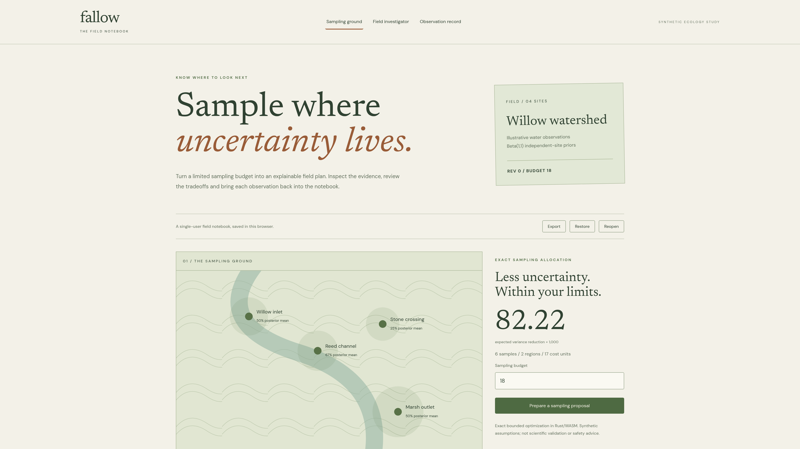

Choose the next field measurement within a real budget.

Willow inlet
650Threshold 500 → one new exceedance
α 2 / β 2 → α 3 / β 2
Recompute the exact sampling plan.Actual synthetic update · independent-site beta priors · no physical-device or scientific-validation claim
An exact sampling plan. Uncertainty and failed jobs stay visible.